Edit Menu: Labeled Audio
| Note carefully that it is only the audio which is operated on, the labels themselves and the Label Track are not affected by most of the commands in this menu. |
- Click, or hover, on any menu item in the image to read about that command. Skip the image
- 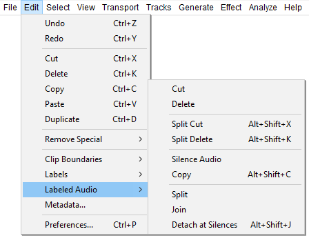
The commands apply to all labeled audio regions that are fully inside a selection drawn in a label track. The selection may extend beyond the label boundaries, but audio that is not labeled and audio whose region label is only partly within the selection will not be acted on.
- Region labels that touch each other without overlapping are treated as separate labeled regions.
- If two or more region labels overlap, they are treated as one labeled region.
- Labeled Audio Split can mark audio splits at point labels as well as at region labels.
To enable the Labeled Audio commands in the Edit menu, the selection must be made in the Label Track and must fully include (or extend beyond) at least one region label, or must touch (or extend beyond) at least one point label.
If none of the audio tracks are included in the selection, the Labeled Audio commands apply to all audio tracks in the project. However if you include only certain audio tracks in the selection, the Labeled Audio commands will only affect those selected audio tracks. See the examples below for a demonstration of the difference between selecting in the label track only versus selecting in the label track and one or more audio tracks.
Cut Alt + X
Removes the selected labeled audio data and puts it on the Audacity clipboard. Any audio data to the right of the selected labeled audio regions is shifted to the left. Only one item can be on the clipboard at a time, but it may include multiple audio tracks and multiple audio clips.
- 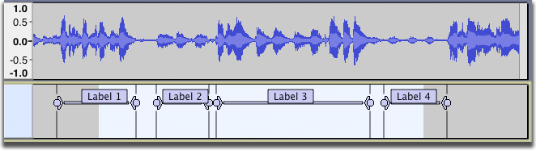
- 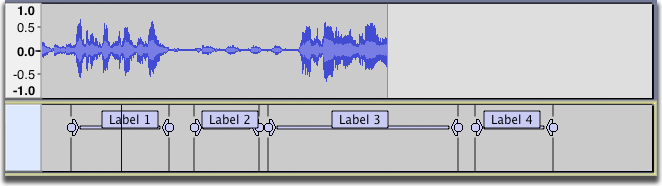
- Note that the audio associated with "Label 2" and Label 3" has been cut, but the audio associated with "Label 1" and "Label 4" remains because Labels 1 and 4 were not fully inside the selection.
Delete Alt + K
Removes the selected labeled audio data but does not put it on the Audacity clipboard. Any audio data to the right of the selected labeled audio regions is shifted to the left.
Split Cut Shift + Alt + X
Same as Cut, but none of the audio data to right of the selected labeled audio regions is shifted. Gaps are thus left behind in the audio track which split the existing audio clip into multiple clips that can be moved independently using Time Shift Tool.
- 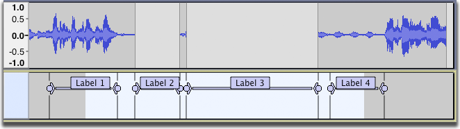
Split Delete Shift + Alt + K
Same as Split Cut, but the audio is not copied to the Audacity clipboard.
Silence Audio Alt + L
The selected labeled audio regions are replaced with silence.
- 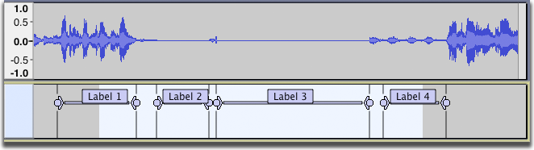
Copy Shift + Alt + C
The selected labeled audio is copied to the Audacity clipboard.
If we start with the selection as shown below and select ...
... then create a new audio track, press the Skip to Start button and paste, the two audio regions associated with Labels 2 and 3 are pasted starting from the start of the new track, separated by blank space.
- 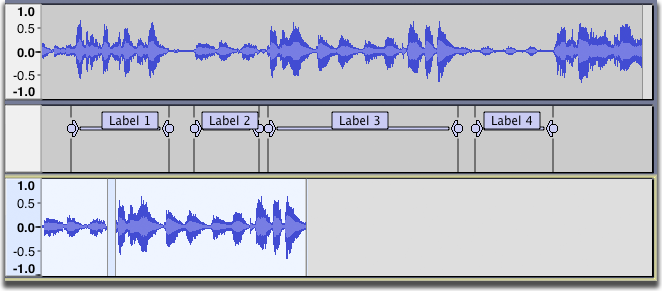
Split Alt + I
The audio track is split into multiple clips; a split is created at the boundaries of every fully-selected label.
- 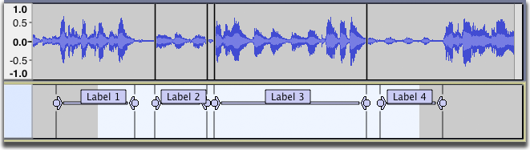
- Note that "Label 2" and "Label 3" are touching but not overlapping, so they are still treated as separate labels and the boundary between them is marked with a split line.
Join Alt + J
Clips within the selected labeled audio regions are joined into one clip by removing the split lines.
- 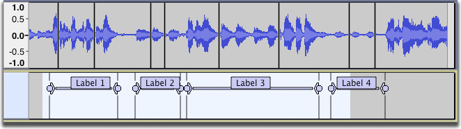
- 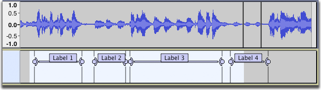
Detach At Silences Shift + Alt + J
In a labeled audio region that includes absolute silence and other audio, creates individual non-silent clips between the regions of silence. The silence in the region becomes blank space between the clips.
- 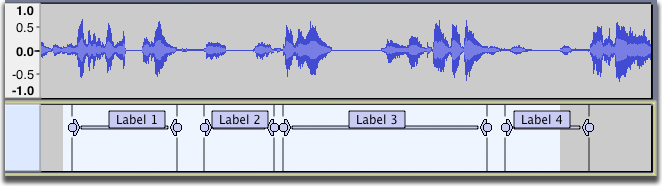
- 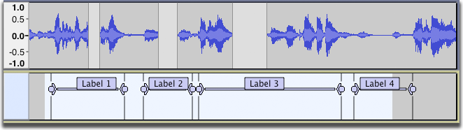
If the labeled audio region is entirely silence, it becomes blank space between the audio either side of the region.
Examples
Example 1 - selection in the Label Track only
- 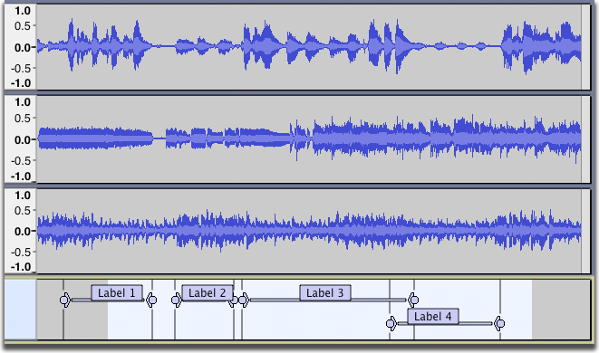
- The selection shown above was created by clicking and dragging in the label track. Applying the command results in this:
- 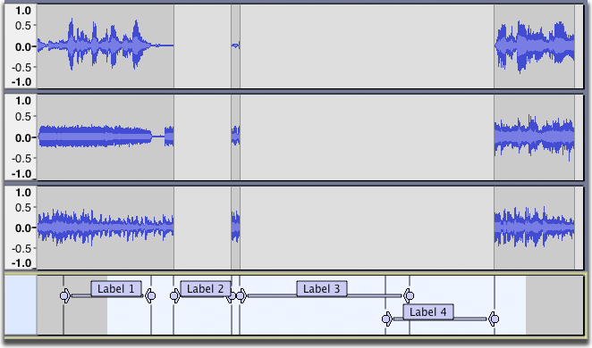
- Result: Audio has been cut only in the regions where the labels are fully inside the selection. Part of the first label is outside the selection so its audio is not affected by the Split Cut operation. The final two labels overlap each other, so are treated as one label.
Example 2 - selection in the Label Track and some Audio Tracks
- If instead the selection is made in the bottom two audio tracks and the label track, applying the command results in this:
- 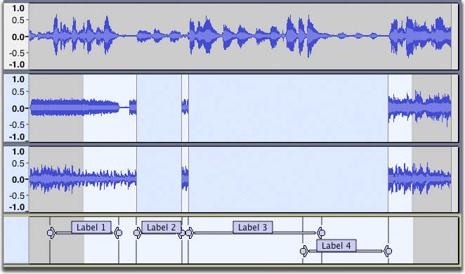
- Result: Audio has been cut only in the selected tracks and in the regions where the labels are fully inside the selection.